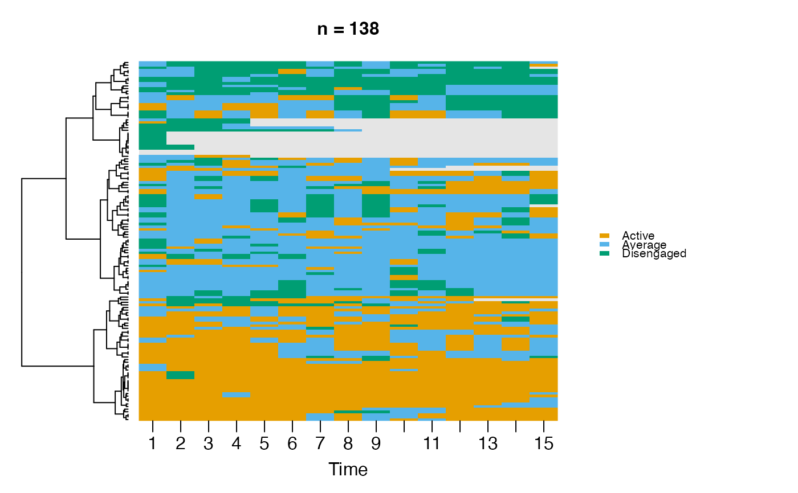
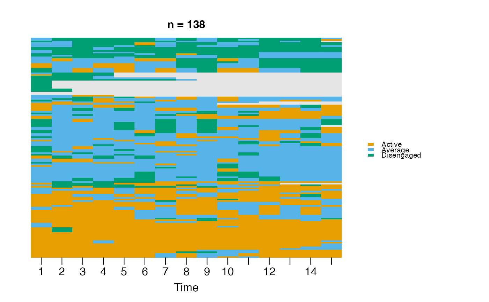
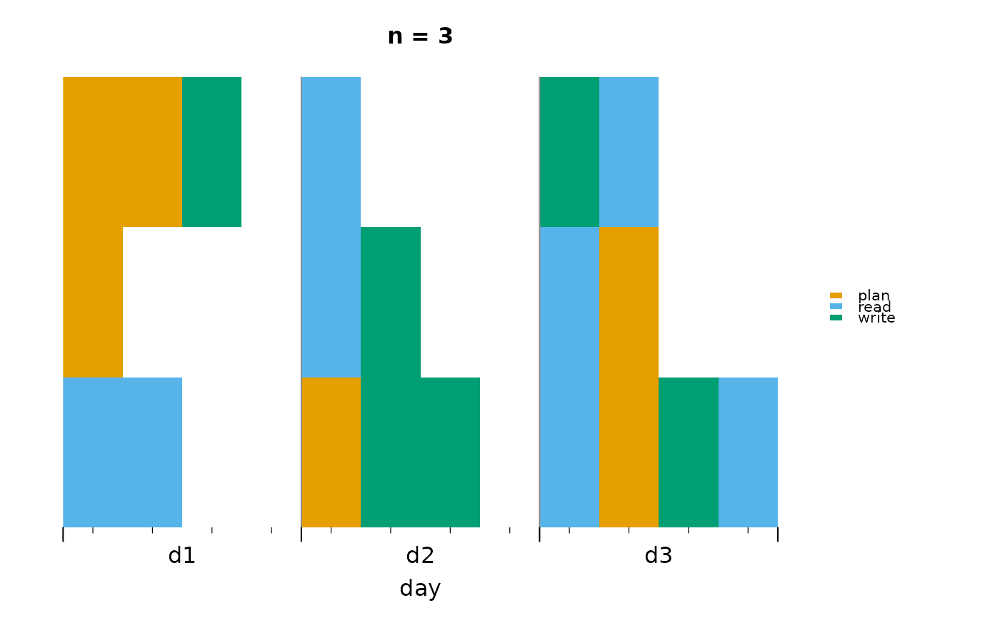
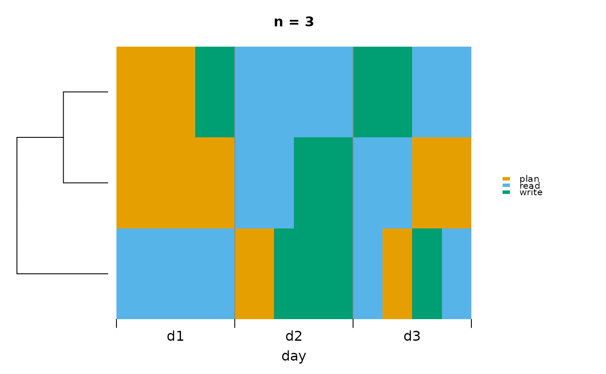
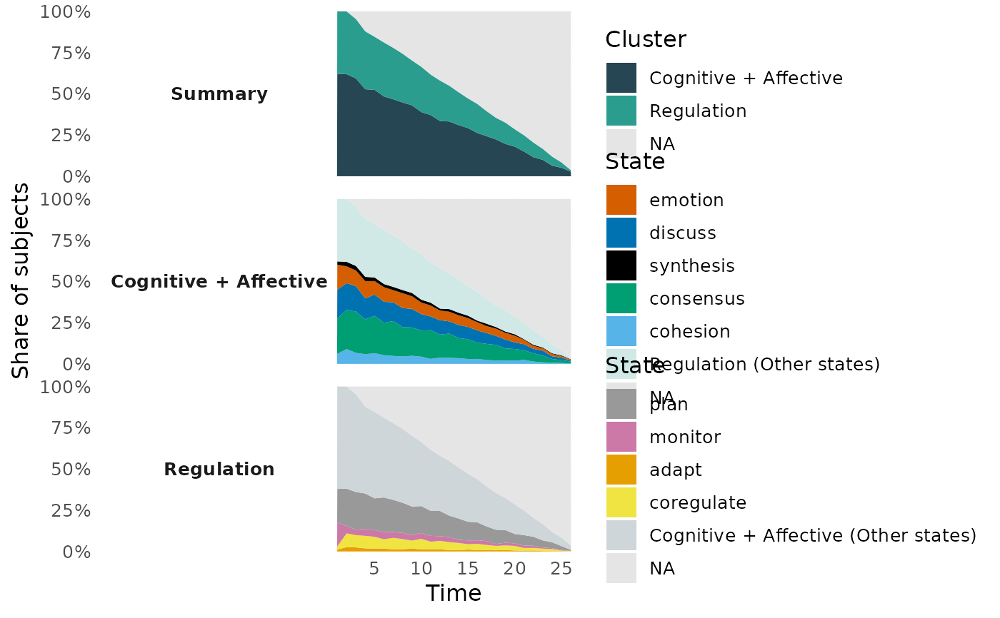
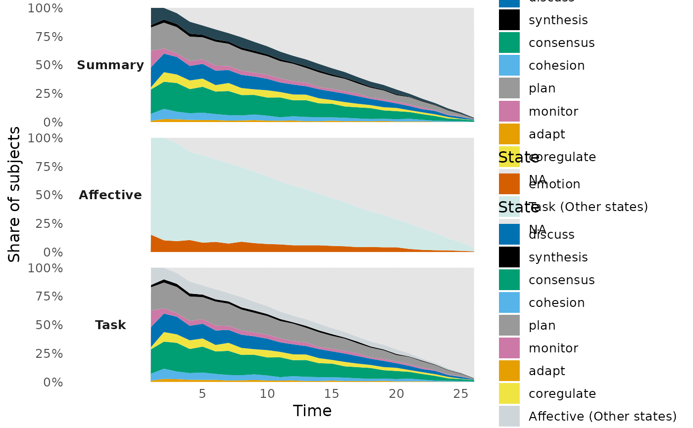
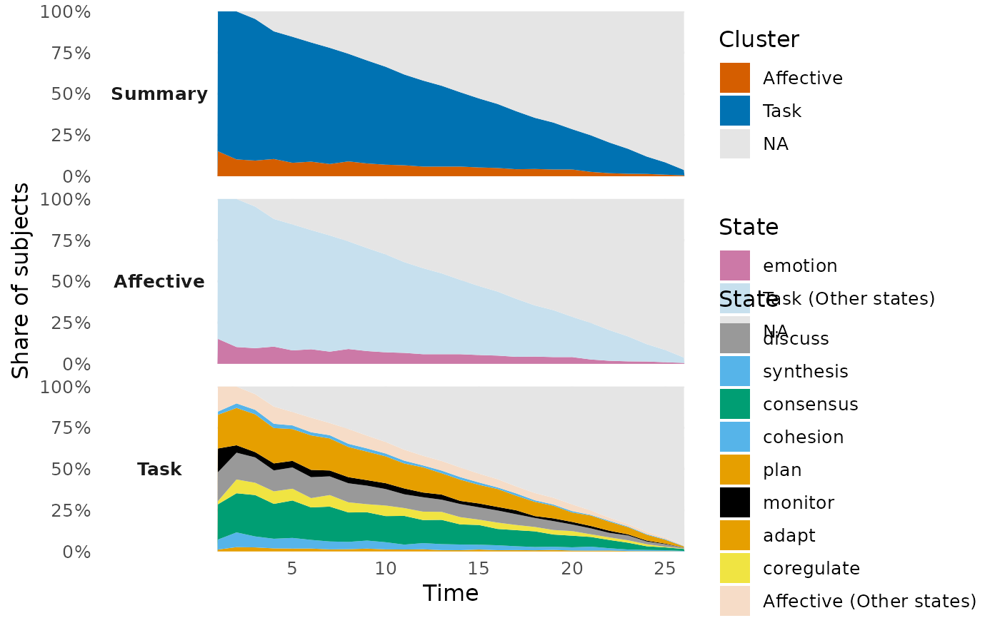

Sequence Plot (heatmap, index, or distribution)
Source:R/sequence_plot.R, R/sequence_plot_mcml.R
sequence_plot.Rdsequence_plot() draws categorical sequences: one row per sequence and
one coloured cell per time point, or the share of sequences in each state
at every time point. Three views share one call:
type = "heatmap"(default): a dense carpet in a single panel, rows ordered bysortor a dendrogram.type = "index": the same layout with optional thin gaps between rows and no dendrogram, split into one panel per group (group, or the clusters of a clustering) on anncolxnrowgrid.type = "distribution": the stacked state distribution over time, drawn bydistribution_plot().
It reads wide sequences, event logs (with action), networks built from
sequences, clusterings, mixture fits and tna models; periods gives one
row per actor with the time axis split into days, weeks or another
period. An mcml from build_mcml() gets a multichannel figure instead:
a macro Summary panel and one panel per cluster (see the section
Multichannel view of an mcml). That figure is drawn with ggplot2 and
takes only type, trim, state_colors, na_color, main,
time_label (or xlab) and the mcml options (normalize, na,
panel, expand, combine, rest, rest_label); every other figure
is drawn with base graphics.
The plot describes the sequences; it does not model them. The row order
of a heatmap comes from sort and is a display choice, so blocks of
similar rows are a reason to cluster the sequences with
build_clusters(), not a clustering in themselves. trim changes only
what is drawn, never the data.
Usage
sequence_plot(
x,
type = c("heatmap", "index", "distribution"),
sort = c("lcs", "frequency", "start", "end", "hamming", "osa", "lv", "dl", "qgram",
"cosine", "jaccard", "jw"),
tree = NULL,
group = NULL,
periods = NULL,
fill = c("stretch", "pad"),
actor = NULL,
action = NULL,
time = NULL,
order = NULL,
scale = c("proportion", "count"),
geom = c("area", "bar"),
na = TRUE,
normalize = FALSE,
trim = NULL,
panel = c("both", "summary", "channels"),
expand = NULL,
combine = NULL,
rest = c("clusters", "pooled", "none"),
rest_label = "Other states",
trim_clusterwise = FALSE,
row_gap = 0,
dendrogram_width = 1.2,
k = NULL,
k_color = "white",
k_line_width = 2.5,
state_colors = NULL,
na_color = "grey90",
cell_border = NA,
frame = FALSE,
width = NULL,
height = NULL,
main = NULL,
show_n = TRUE,
time_label = "Time",
xlab = NULL,
y_label = NULL,
ylab = NULL,
tick = NULL,
ncol = NULL,
nrow = NULL,
combined = TRUE,
legend = NULL,
legend_size = NULL,
legend_title = NULL,
legend_ncol = NULL,
legend_border = NA,
legend_bty = "n",
cols = NULL
)
# S3 method for class 'mcml_sequence_plot'
print(x, ...)Arguments
- x
The sequences to draw:
- event log
A data frame with one row per action and
actionnaming the action column (withactor,timeandorderas needed). It is converted withprepare(): one row per actor, or per actor-period withperiods.- data frame or matrix
One row per sequence, one column per time point; for a data frame,
colsnames the position columns when they are not a numbered run.- netobject
A network built from sequences; its sequence data is drawn. A network without its sequence data (built from a matrix) raises an error, and a one-hot or association network raises an error of class
nestimate_bad_input.- net_clustering
From
build_clusters(): its sequences, with the cluster assignments as groups and its distance matrix as the heatmap's dendrogram.- netobject_group
From
cluster_network()orbuild_network()on a clustering: the full sequences and assignments carried by the clustering, or, for a plain group split, the groups' sequences stacked and labelled by group.- net_mmm
From
build_mmm(): its sequences (or, when the fit stores none, those of its first component model), with the hard assignments as groups.- tna
A
tnamodel; its integer-coded sequences are decoded to their state labels.- mcml
From
build_mcml(), built from sequences (anmcmlbuilt from a matrix carries none and raises an error). It gives the multichannel figure: one panel per cluster plus a macroSummarypanel.type = "heatmap"and"index"draw the carpet (each channel's own states solid, the other clusters a faded wash);type = "distribution"draws the stacked distribution (addnormalize = TRUEfor a TraMineR-styleseqdplot, where each time point sums to 1).
For the
print()method: anmcml_sequence_plot.- type
The view:
"heatmap"(default),"index"or"distribution".- sort
How rows are ordered, in the heatmap and within each panel of the index view.
"lcs"(default) orders them by a Ward (ward.D2) hierarchical clustering of their longest-common-subsequence distances, and any otherbuild_clusters()distance ("hamming","osa","lv","dl","qgram","cosine","jaccard","jw") does the same with that distance."frequency"clusters the rows by how often each state occurs in them."start"sorts the rows alphabetically by their states from the first time point on,"end"from the last time point back; these two draw no dendrogram. A clustering input (anet_clustering, or anetobject_groupfromcluster_network()) orders the heatmap by a hierarchical clustering of its own distance matrix, using its linkage when it was clustered hierarchically andward.D2otherwise (for example with the defaultpam), unlesstreeis given.- tree
A
hclust,dendrogramoragnesobject that gives the row order of the heatmap and is drawn beside it; it overridessort. It must have one leaf per row. DefaultNULL.- group
The groups to draw in separate panels, one value per sequence (
nrow(x)values), for the index and distribution views; the heatmap ignores it.NULL(default) uses the cluster assignments of anet_clustering,net_mmmornetobject_groupinput, and draws one panel otherwise. Withperiods,groupinstead names a column of the event log (or of the network's metadata) that is constant within actor, such as a class or a condition: one panel per value, one row per actor, all panels on the same period axis. With an event log it works only together withperiods; otherwise it raises an error of classnestimate_bad_input.- periods
The column that splits each actor's sequence into periods (days, weeks, ...): a column of the event log, or of the network's metadata.
xmust be an event log withactorandaction, or a netobject built withactorandsession = periods, so that each actor-period pair holds one sequence; anything else raises an error of classnestimate_bad_input. The plot then has one row per actor and the time axis is split into equal-width blocks, one per period. ADatecolumn gives one block per calendar day and a whole-number column (a day or week counter) one block per number, from the first to the last, so a period in which nobody acted is an empty block; factor levels give their order (an unused level is an empty block); other columns are sorted. Ticks mark the period boundaries and each label sits under its block;tickthins the labels, and the x-axis label defaults to the column name. Heatmap and index views only (the distribution view raises an error of classnestimate_bad_input).trimthen counts periods, not time points. DefaultNULLplots the sequences as they are.- fill
With
periods, how an actor's steps fill a block."stretch"(default) spreads them over the whole block, so one step fills it and three steps take a third each; the cell width differs between actors."pad"gives every block as many fixed slots as the busiest actor-period and leaves unused slots asNA, so a slot is the same step position for every actor (minor ticks mark the slots when there are at most 60 in all). Withperiods, empty space is white unlessna_coloris given, so it is never confused with a state drawn in grey. Repeats of a state merge into one spell;cell_border = "white"(TraMineR'sborder) outlines each action so they show as separate, equal shares of the period. Settingfillwithoutperiodsraises an error of classnestimate_bad_input; anmcmlignores it.- actor, action, time, order
For an event log: column names, as in
build_network(). Givingactiondeclaresxan event log (one row per action);actoridentifies who acted (one row per actor in the plot), andtimeandorderput each actor's actions in order (otherwise row order is used). Withoutperiods, atimecolumn also splits an actor's actions into sessions at gaps over 15 minutes, asprepare()does; withperiodsit does not, so each actor-period is one sequence.actor,timeororderwithoutaction, a column that is not inx, and a missing actor or period raise an error of classnestimate_bad_input. DefaultNULLeach.- scale, geom, na
For the distribution view, passed to
distribution_plot():scaleis"proportion"(default) or"count",geomis"area"(default) or"bar", andna = TRUE(default) draws missing cells as a band of their own. For anmcmldistribution,na = FALSEdrops theNA(ended) band and shows every time point as shares of the sequences still running there, so each panel stacks to 100 percent (cluster panels only withrest = "clusters"or"pooled"; a time point where no sequence is running stays empty).- normalize
For an
mcmldistribution only:TRUEnormalises each time point to sum to 1 within its channel (the composition of TraMineR'sseqdplot);FALSE(default) shows prevalence, capped with anNAband.- trim
A cut of the time axis (one number) or of the time axis and the rows (two numbers), to stop a few long sequences from stretching the plot and a few near-empty ones from padding it. It applies to all three views, the
mcmlmultichannel figure included. DefaultNULLplots everything.The first number cuts the time axis. A fraction in (0, 1) judges each time point on its own activity and keeps the busiest ones that together hold that share of the observed states, ties going to the earlier one; the rest are removed wherever they sit and the kept ones close up under their own labels. So
trim = 0.9removes the quiet time points holding the last tenth of the states, which is what a long tail consists of, and those with no data. A value>= 1is an absolute cut (trim = 50keeps the first 50 time points). Withperiodsthe unit is the period block:trim = 60keeps the first 60 periods and a fraction judges each period by its actions.The second number ends each row earlier and never removes a row, counted over the time points kept by the first: a value
>= 1keeps each row's first that many observed states (trim = c(60, 5)), a fraction its first share of them (trim = c(0.9, 0.9)). What is left stays in place; the row is white after that point.NAleaves an axis alone (trim = c(NA, 5)). Either way only the drawing changes, not the data.- panel
For an
mcmldistribution only: which panels to draw."both"(default) stacks the macroSummarychannel and the per-cluster channels on one figure, each with its own legend;"summary"draws the macro channel alone, keyed and coloured by cluster;"channels"draws the per-cluster channels alone, keyed and coloured by state. The macro channel is keyed by cluster and the rest by state, so a cluster and a state can land on the same colour; drawing one panel avoids that and gives it a default title. With anmcmlheatmap or index view, a value other than"both"raises an error.- expand
For an
mcml: the clusters whose member states are shown individually in theSummarypanel;"all"orTRUEexpands every cluster. The per-cluster panels are unaffected. DefaultNULLkeys theSummarypanel by cluster.- combine
For an
mcml: clusters to merge into one channel. A character vector merges one group (e.g.combine = c("Cognitive", "Affective")); a list merges several, and its names label the merged channels (default label"Cognitive + Affective"). A merged group acts as one cluster throughout the figure: one per-cluster panel holding all its states, one key in theSummarypanel, and one faded band in the other panels.expandis resolved after merging, so it can name the merged label. An unknown cluster, a group of fewer than two, or a cluster in two groups raises an error. DefaultNULLdraws the partition as built.- rest
For an
mcml: how a cluster's panel shows the time its subjects spend in other clusters."clusters"(default) draws one faded band (or wash, in the carpet) per other cluster;"pooled"draws all other clusters as one grey band labelledrest_label;"none"leaves them blank, so the panel shows only its own states. In the distribution view"none"drops theNA(ended) band too, and the panel's height at each time point is the share of subjects in that cluster. Ignored withnormalize = TRUE, which rescales each panel to its own states. TheSummarypanel is unaffected.- rest_label
For an
mcml: the legend text for time spent in other clusters. Default"Other states";"Others"or"Rest of states"are alternatives. The pooled band (rest = "pooled") takes it as is; the per-cluster bands read"Social (Other states)". A label equal to a state or cluster name, or to"NA", raises an error.combine,expand,restandrest_labelon any input other than anmcmlraise an error.- trim_clusterwise
For a grouped index or distribution view with a fractional
trim:FALSE(default) computes one cut on the pooled data and applies it to every panel, so all panels share the same width and the time axes stay aligned;TRUEjudges the time points within each group, so panels can end up at different widths. An absolutetrim(>= 1) ignores it, since the cut is the same everywhere.- row_gap
The vertical gap between rows of the index view, as a fraction of the row height, in [0, 1). Default
0(dense, like the heatmap);0.15gives visible separators when there are few rows.- dendrogram_width
The width of the heatmap's dendrogram panel, against a carpet width of 4: the default
1.2makes the dendrogram 0.3 times as wide as the carpet. Used only when a dendrogram is drawn.- k
For the heatmap: the number of clusters to cut the dendrogram into, a single number of at least 2 and less than the number of rows; thin horizontal lines then separate them in the carpet. Ignored without a dendrogram (e.g.
sort = "start") and in the other views. DefaultNULL(no separators).- k_color
The colour of the cluster separator lines. Default
"white".- k_line_width
The line width of the cluster separators. Default
2.5.- state_colors
Colours for the fill keys, in one of two forms: unnamed, one colour per state in level order (states are ordered as
sort(unique(...))); or named, a lookup where only the keys you name are overridden and every other key keeps its default (Okabe-Ito). Names this figure does not draw are dropped with a message naming them, so one project-wide palette can be handed to every plot and each takes the keys that apply to it. DefaultNULLuses the palette attached toxwithset_state_colors(), if any; a palette given here wins for this figure.For an
mcmlthe named form reaches the whole figure, not only the states: a cluster name colours itsSummaryband, its channel strip and its faded band in the other panels, and a group merged bycombineis named by its label (the list name you gave it, or"A + B").rest_labelis a key too. Sostate_colors = c(plan = "#0072B2", "Planning + Monitoring" = "#D55E00")recolours one state and one combined cluster and leaves the rest of the palette alone.- na_color
The colour of missing cells. Default
"grey90"; withperiods,"white"unless given.- cell_border
The colour of each cell's border. Default
NA(no border).- frame
Whether to draw a box around each panel; axis ticks and labels appear either way. Default
FALSE.- width, height
Device dimensions in inches. In an interactive session, giving either opens a new graphics device with
grDevices::dev.new()(the other defaults to 7); otherwise they are ignored. In knitr chunks, use thefig.widthandfig.heightchunk options instead. DefaultNULL.- main
The plot title. Default
NULL: no title, apart from"n = N"whenshow_n = TRUE. With several groups,mainis drawn once above the panels, and not at all whencombined = FALSE.- show_n
Whether to append
"(n = N)"to the title (to each panel title when grouped). DefaultTRUE.- time_label, xlab
The x-axis label;
xlabis an alias that wins when given. Default"Time"(withperiods, the period column's name).- y_label, ylab
The y-axis label of the distribution view;
ylabis an alias. DefaultNULL, whichdistribution_plot()reads as"Proportion"or"Count"according toscale.- tick
Label every
tick-th time point on the x-axis. DefaultNULLthins the labels to about 15.- ncol, nrow
The panel grid of the grouped index and distribution views. Default
NULL: with neither given,ncol = ceiling(sqrt(G))forGgroups andnrow = ceiling(G / ncol); with one given, the other follows. Withcombined = FALSEthe grid does not affect the layout, butncol * nrowmust still be at least the number of groups or an error is raised.- combined
For the grouped index and distribution views:
TRUE(default) arranges the groups on one figure withgraphics::layout();FALSEdraws each group on its own page, at full size with its own legend. A single group ignores it, and the heatmap is always one figure.- legend
The legend position:
"right","bottom"or"none". DefaultNULL, read as"right"for every view.- legend_size
The legend text size. Default
NULLscales it with the device width so the legend stays in proportion on a 5-inch and a 12-inch figure (between 0.65 and 1.2).- legend_title
The legend title. Default
NULL(none).- legend_ncol
The number of legend columns. Default
NULL: one row for a bottom legend, one column for a right legend.- legend_border
The colour of the legend swatches' borders. Default
NA(none).- legend_bty
The legend box:
"n"(default, none) or"o"(boxed).- cols
For a wide data frame: the columns holding the positions. Needed when they are not a numbered run (
T1,T2, ...), when one of them is calledaction, or when any other column sits beside them; given for any other input it raises an error of classnestimate_bad_input, except for anmcml, which ignores it. DefaultNULL.- ...
For the
print()method: ignored.
Value
For an mcml: the multichannel figure, one panel per channel
(the macro Summary and one per cluster), stacked, each with its own
legend of its clusters or states. When more than one channel is drawn
it is an mcml_sequence_plot, a gtable that its print() method
draws on a new page; when panel = "summary" leaves a single channel it
is a ggplot. The print() method returns its input invisibly.
Every other input is drawn with base graphics, and the call returns, invisibly, a list describing the figure, whose fields depend on the view:
- heatmap
ord(the row order plotted, as integer indices),codes(the integer-coded, trimmed sequence matrix),palette,levels(the state labels, parallel topalette) andsort_used(the ordering applied;"net_clustering"when a clustering's dendrogram was used).- index
codes,palette,levels,orders(a list of row orders, one per panel, indexing the original rows) andgroups(the panel labels).- with
periods ord(the row order of the actors),codes(an integer matrix, one row per actor and one column per period slot in thefill = "pad"layout, named"<period>.<slot>"),palette,levels,periods(the period labels in plotted order, aftertrim) andfill; withgroup, alsogroups(the panel labels) andorders(one row order per panel, indexing the actors),ordbeing their concatenation.- distribution
What
distribution_plot()returns:counts,proportions,levels,paletteandgroups.
Multichannel view of an mcml
An mcml built from sequences stores, for every cluster, the full
sequence matrix with the other clusters' states blanked out. Each cluster
is therefore a channel, and sequence_plot() stacks them:
SummaryThe macro sequence: at every time point, the cluster each subject is in.
- One panel per cluster
That cluster's own states, plus the time its subjects spend in the other clusters.
The options apply in this order, so each one sees the result of the one before:
combinemerges clusters into one channel. The merged group is then one cluster throughout the figure: one panel with all its states, one Summary key, one band in the other panels. The object itself is not changed.expandopens clusters (including a merged group, by its label) into their member states in the Summary panel only.restandrest_labelset how a cluster's panel shows the other clusters: one faded band per cluster labelled"<cluster> (<rest_label>)"(rest = "clusters"), one grey band labelledrest_label("pooled"), or nothing ("none").na(distribution only) keeps theNAband of sequences that have ended (TRUE, shares of all subjects) or drops it (FALSE, shares of the subjects still running, so every panel stacks to 100 percent unlessrest = "none").normalize = TRUEinstead rescales each cluster panel to its own states, which ignoresrestandna.
panel draws the Summary or the cluster panels alone, and
trim cuts the time axis for every panel at once.
Methods
print.mcml_sequence_plot()draws the figuresequence_plot()returns for anmcmlwith more than one channel (the macroSummaryand one panel per cluster, each with its own legend) on a new page of the current graphics device.
Examples
sequence_plot(trajectories)

# \donttest{
sequence_plot(trajectories, type = "index")

sequence_plot(trajectories, type = "distribution")
 # One row per student, one block per day; each day's actions fill it.
daily <- data.frame(
student = rep(c("s1", "s2", "s3"), times = c(5, 9, 6)),
day = c("d1", "d2", "d2", "d3", "d3",
"d1", "d1", "d2", "d2", "d2", "d3", "d3", "d3", "d3",
"d1", "d1", "d1", "d2", "d3", "d3"),
action = c("plan", "read", "write", "read", "plan",
"read", "read", "plan", "write", "write", "read", "plan",
"write", "read", "plan", "plan", "write", "read", "write",
"read"))
sequence_plot(daily, actor = "student", action = "action", periods = "day")
# One row per student, one block per day; each day's actions fill it.
daily <- data.frame(
student = rep(c("s1", "s2", "s3"), times = c(5, 9, 6)),
day = c("d1", "d2", "d2", "d3", "d3",
"d1", "d1", "d2", "d2", "d2", "d3", "d3", "d3", "d3",
"d1", "d1", "d1", "d2", "d3", "d3"),
action = c("plan", "read", "write", "read", "plan",
"read", "read", "plan", "write", "write", "read", "plan",
"write", "read", "plan", "plan", "write", "read", "write",
"read"))
sequence_plot(daily, actor = "student", action = "action", periods = "day")
 sequence_plot(daily, actor = "student", action = "action", periods = "day",
fill = "pad", type = "index")
sequence_plot(daily, actor = "student", action = "action", periods = "day",
fill = "pad", type = "index")

# The same from a network built with the period as its session.
daily_net <- build_network(daily, method = "relative", actor = "student",
action = "action", session = "day")
sequence_plot(daily_net, periods = "day")

# Multichannel MCML view: one channel per cluster + a macro Summary.
fit <- build_mcml(
group_regulation_long,
clusters = list(Cognitive = c("discuss", "synthesis", "consensus", "cohesion"),
Regulation = c("plan", "monitor", "adapt", "coregulate"),
Affective = "emotion"),
actor = "Actor", action = "Action", time = "Time")
sequence_plot(fit) # multichannel carpet

# Shape the multichannel view (see the section above).
sequence_plot(fit, type = "distribution",
combine = list(Task = c("Cognitive", "Regulation")),
expand = "Task") # merge, then open

# Colour by name: one state, one cluster, one combined group. Everything
# not named keeps its default colour.
sequence_plot(fit, type = "distribution",
combine = list(Task = c("Cognitive", "Regulation")),
state_colors = c(Task = "#0072B2", Affective = "#D55E00",
emotion = "#CC79A7"))

# }